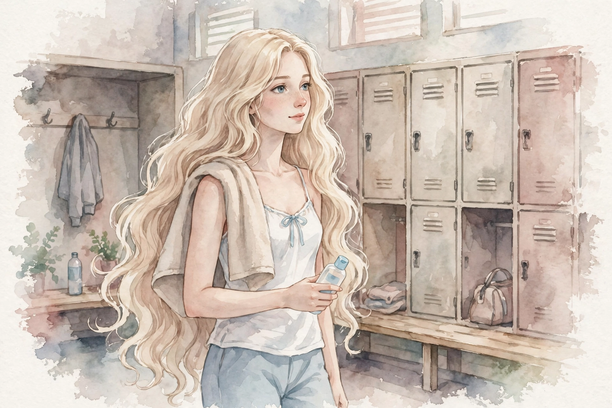

運動のあとの洗髪の段取り

運動の習慣がある方は、汗をかいた後の洗髪の段取りに迷うことがあります。施術の現場でも、ジム通いのお客様から洗う回数の相談を受けます。この記事では、段取りの考え方を整理します。
洗うタイミングは「汗が引いてから」
運動直後は、汗がまだ出続けていることがあります。その状態で洗っても、洗い上がりのすっきりした感じが得にくい場合があります。水分補給をして、汗が引いてから洗髪に入るのが、段取りとしてはスムーズです。ジムのシャワーを使う場合は、その場の時間の中で、予洗いとシャンプーの基本を押さえます。
すぐに洗えない場合は、タオルで汗を拭い、髪をほどいて乾かしておくだけでも、その後の扱いが変わります。濡れた髪を結んだまま放置しないことが、もつれを防ぐ基本です。
ジムで洗う日と、自宅で洗う日
運動の後に予定がある日はジムで洗い、まっすぐ帰る日は自宅で丁寧に洗う、といった使い分けも現実的です。ジムではアメニティを使うことが多いため、量は少なめから始めるのが無難です。アメニティの確認点は、別記事「宿泊先のアメニティシャンプーの確認点」と共通する部分があります。
頻度が多い方は、シャンプーを使う洗髪と、水ですすぐだけの日を分ける考え方もあります。汗の量と、その日の整髪料の有無で判断するものです。毎日同じ洗い方に固定する必要はありません。
回数の考え方は「頭皮の状態」と相談
洗う回数に正解はなく、汗のかき方や頭皮の感じ方で調整するものです。洗った後の頭皮の感触を覚えておくと、自分なりの間隔が見えてきます。かゆみなど気になる状態が続く場合は、専門家に相談してください。
運動の後の洗髪は、段取りを決めておくことで、習慣の一部として無理なく回せるようになります。運動の継続と同じで、続けられる形に整えることが大切です。自分の生活のリズムに合った型を、少しずつ見つけてください。
ジムに持っていくアイテムの準備も、段取りの一部です。自宅のシャンプーを小分けにするか、ジムのアメニティで済ませるかは、運動の頻度と荷物の量で決めます。小分けの方法は、旅行の準備についての別記事の考え方がそのまま使えます。タオルや着替えと一緒に、洗髪の道具もセットで用意しておくと、忘れ物が減ります。
運動の種類によっても、汗のかき方や髪の濡れ方は変わります。ランニングのように髪が汗で濡れる運動と、軽い運動とでは、洗髪の必要度も違います。運動の強度で洗い方を分ける目安を自分の中で持っておくと、判断が早くなります。段取りとは、判断を前もって済ませておくことです。
運動後の洗髪では、頭皮の汗の拭き取り方も段取りに入れておきたい点です。汗をタオルで強くこすると、頭皮への摩擦が増えます。押さえるように拭くことが基本です。これはタオルドライの考え方と同じです。また、運動の後に外出の予定がある場合は、乾かし方まで含めた時間配分が必要です。ジムのドライヤーの台数には限りがあるため、タオルドライを丁寧にして乾かす時間を短くする工夫が、そのまま段取りの工夫になります。運動、洗髪、身支度を一続きの流れとして設計してください。
運動の日の洗髪は、体調の確認の機会でもあります。頭皮の感触や汗のかき方がいつもと違う日は、無理をせず休息を優先してください。ケアの段取りは、体調と相談しながら組むものです。
運動の頻度が増える季節は、洗髪の段取りも見直しの時期です。回数が増える分、1回あたりの手順を軽くするなど、総量で調整してください。頻度と丁寧さのバランスが、続けるための設計です。
段取りを決めることは、運動の習慣そのものを続ける助けにもなります。

セラフィナ「運動のあとは、汗が引いてから洗うのが段取りのコツだね」